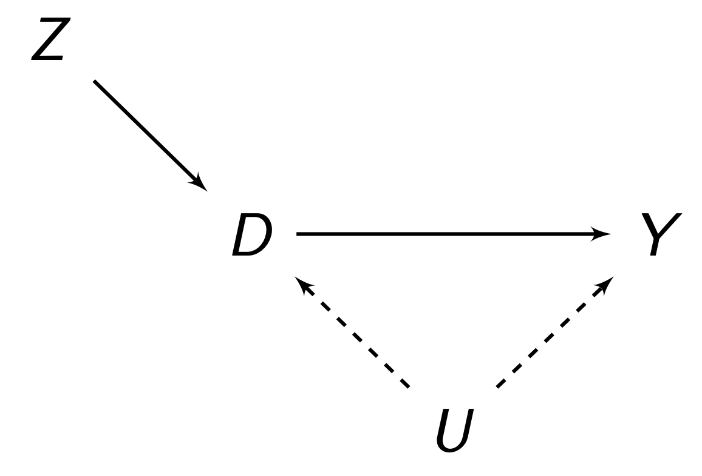

library(fixest)
iv <- feols(Y ~ 1 | D ~ Z, data = mydata, se = "hetero")9 Instrumental Variables
In the last chapter, we introduced the selection on observables designs and estimators. In this chapter, we introduce another popular (and slightly more convincing) causal estimation design - the instrumental variables estimator. R-code is provided when applicable.
Before reading this applied chapter, it is essential to understand the theory chapter on causal identification, and highly recommended to review the chapter method of moments.
9.1 Non-Compliance Design
In the chapter on method of moments, we discussed the instrumental variables estimator. Instrumental Variables can also be used in applied causal inference. The modern IV design focuses on noncompliance in randomised experiments.
When we assign individuals to treatment/control in randomised experiments, we often cannot guarantee that individuals will actually follow through with treatment. Sometimes, someone who was supposed to get treatment refuses treatment, and sometimes, someone who shouldn’t get the treatment decides to get treatment.
We can formalise this idea. Let us assume an encouragement \(Z_i \in \{0, 1\}\), which is our treatment assignment. Then, we have the treatment variable \(D_i \in \{0,1\}\), which is someone who actually took the treatment or not. Given this framework, we can divide all units \(i\) into 4 categories:
- Compliers: People who comply with encouragement \(Z_i\). Their \(Z_i = D_i\).
- Always-takers: People who no matter what encouragement \(Z_i\) is, always take treatment.
- Never-takers: People who no matter their encouragement \(Z_i\) is, never take treatment.
- Defiers: People who do the opposite of encouragement \(Z_i\), so always \(D_i ≠ Z_i\).
We can show what will happen with all 4 types of people in a table, called the principal strata:
| \(Z_i = 1\) | \(Z_i = 0\) | |
| \(D_i = 1\) | Complier/Always-Taker | Defier/Always-Taker |
| \(D_i = 0\) | Defier/Never-Taker | Complier/Never-Taker |
The idea of the non-compliance designs is to use our encouragement/treatment assignment \(Z\) as an instrument for \(D\) - actually taking the treatment. This can solve any concerns we might have regarding selection into non-compliance. A typical idea is this:

\(U\) here is some confounder that affects if someone actually takes treatment or not. We can see that \(Z\) and confounder \(U\) explain \(D\). If we only use the part of \(D\) explained by \(Z\), and find the relationship of that part of \(D\) with \(Y\), we can see that \(U\) will no longer be affecting \(Z\), removing the backdoor path. This is the idea behind non-compliance designs.
9.2 Identification
One causal estimand that we can use is the IV-non-compliance design is the Intent To Treat (ITT), which is essentially the ATE of \(Z\) on \(Y\), ignoring if people actually took the treatment or not. This is essentially the affect of encouragement. If there is any non-compliance, then the ITT will not equal the ATE.
\[ \tau_{ITT} = \E(Y_i|Z_i = 1) - \E(Y_i | Z_i = 0) \tag{9.1}\]
This is quite easily estimatable in non-compliance randomisation settings, since \(Z\) is randomly assigned. Thus, we can calculate the ITT with a linear regression:
\[ Y_i = \alpha + \tau_{ITT} Z_i + \eps_i \]
However, we might not care about the ITT. We might want the actual effect of \(D\) on \(Y\). An alternative is to find the Average Treatment Effect on only compliers, called the Local Average Treatment Effect (LATE) (a version of the CATE from definition 7.6). We need a few assumptions:
Definition 9.1 (Instrumental Variables Assumptions) There are 4 assumptions for us to identify the LATE. The first 3 are the normal assumptions from the IV estimator.
- Relevance: \(Z\) must be correlated to \(D\). Or in other words, compilers must exist, or else, encouragement would not affect treatment.
- Ignorability/Exogneity: There is no backdoor path between \(Z\) and \(D\), and no backdoor path between \(Z\) and \(Y\) (we can do controls/selection on observables to account for this).
- Exclusions Restriction: \(Z\) must only have an effect on \(Y\) through \(D\). \(Z\) must not have any independent effect on \(Y\).
- Monotonicity: There are no defiers.
Visual Examples of Violations
The figure below contains some visual examples of violations of the above to faciliate understanding of these assumptions:

Let us show how we can prove the LATE is identifiable under these assumptions. First, the ITT itself in eq. 9.1 is identifiable under exogeneity/ignorability alone. Now, let us define \(c\) as compliers, \(a\) as always-takers, \(n\) as never-takers, and \(d\) as defiers. We can break down the ITT into a weighted average:
\[ \tau_{ITT} = \tau_{ITT}^c \P(c) + \tau_{ITT}^a \P(a) + \tau_{ITT}^n \P(n) + \tau_{ITT}^d \P(d) \]
We know that under our assumption of monotonicity, we assume no defiers, so \(\P(d) = 0\):
\[ \tau_{ITT} = \tau_{ITT}^c \P(c) + \tau_{ITT}^a \P(a) + \tau_{ITT}^n \P(n) \]
Our exclusions restriction says that \(Z\) has no affect on \(Y\). Remember that the ITT from eq. 9.1 is the relationship between \(Z\) and \(Y\). But since always-takers and never-takers ignore \(Z\) when deciding treatment, \(Z\) has no effect of them on \(Y\). Thus, we can further simplify:
\[ \tau_{ITT} = \tau_{ITT}^c \P(c) \]
Remember that the \(\tau_{ITT}\) for compliers, \(\tau_{ITT}^c\), is our LATE that we want to identify. So, let us isolate it to get:
\[ \tau_{LATE} = \frac{\tau_{ITT}}{\P(c)} \ = \ \frac{\E(Y_i | Z_i = 1) - \E(Y_i | Z_i = 0)}{\E(D_i | Z_i = 1) - \E(D_i | Z_i = 0)} \tag{9.2}\]
The LATE is interpreted as the ATE of the compliers. This can be tricky to interpret sometimes, as you cannot actually identify who the compliers are, and different encouragements \(Z\) can result in different compliers.
The LATE is also generally not equal to the ATE or ATT without further assumptions. When there is only one-sided non-compliance when people who are not encouraged cannot get the treatment, the LATE does equal the ATT.
9.3 Causal Estimation
We typically estimate the LATE with the two-stage least squares estimator (2SLS), which we covered the theory for in chapter 6. For more details on the mechanics, check out that chapter.
To implement 2SLS, we first estimate the first stage:
\[ D_i = \alpha + \rho Z_i + \eta_i \]
And using the fitted values from \(\hat D_i\) (which is the part of \(D\) explained by \(Z\)), we calculate the second stage:
\[ Y_i = \gamma + \tau D_i + \eps_i \]
In R, we will typically use the fixest package and the feols() function, which allows us to do both stages at once.
We should typically use heteroscedasticity-robust standard errors for accurate statistical inference. We can run t-tests like we would normally for a regression. We should note that the IV and 2SLS estimator are only asymptotically consistent, as explained in chapter 6, so we should be wary of small sample sizes.
There is also an alternative estimator, called the Wald Estimator, which is the sample equivalent of the identification result of eq. 9.2:
\[ \widehat{\tau_{LATE}} = \frac{S.Cov(Y_i, Z_i)}{S. Cov(D_i, Z_i)} \]
Where \(S.Cov\) refers to the sample covariance. You will notice this is identical to the IV estimator we derived in chapter 6. In that chapter, we also derived the variance of the IV estimator as:
9.4 Robustness Tests
The causal identification of our IV hinges on our assumptions from definition 9.1.
The relevance of the instrument is quite easy to test. We simply run a regression with \(D\) as the outcome and \(Z\) as the regressor. This is called the reduced-form regression:
\[ D_i = \beta_0 + \beta_1 Z_i + \eps_i \]
And if \(\beta_1\) is statistically significant, we can generally assume relevance assumption is met. In R, we can test this with:
library(estimatr)
reduced_form <- lm_robust(D ~ Z, data = mydata)
summary(reduced_form)The exclusions restriction is very difficult to test - it is unobservable. We can only really think about it theoretically, with the context of past research and our intuition. However, in randomisation non-compliance settings.
Do note that the size of the exclusions restriction is roughly proportional to the LATE. That means if the LATE is large, an our exclusion violation is very small, we can ignore the problem.